비서-2급 (2017-05-14 기출문제)
1과목: 비서실무
1. 김영숙 비서는 첫 출근을 앞두고 있다. 첫 출근 시 김비서의 준비 자세로 바람직하지 않은 것은?
- 면접 때의 조용하고 내성적인 분위기의 모습에서 벗어나 활기차고 적극적인 모습을 보일 수 있는 의상과 화장을 선택하였다.
- 첫날이라 아침에 준비할 업무가 많지 않을지라도 상사보다 먼저 출근하여 업무 준비를 하였다.
- 전임비서가 알려주는 내용을 모두 메모하였다.
- 출근 전에 회사 사람들에게 자신을 소개할 때 필요한 내용을 노트에 적어두고 연습해 보았다.
(정답률: 69%)

2. 비서의 자기개발과 경력계획에 대한 설명으로 가장 적절하지 않은 것은?
- 자기개발은 업무시간 이외의 시간에만 하는 것은 아니며, 업무중에 스스로의 업무방식을 연구하는 것을 통해 자기개발이 가능하다.
- 업무의 능률이나 결과를 신중하게 검토하는 일, 업무의 낭비를 없애고 업무시간의 손실을 없애기 위해 노력하는 일과 같이 효율적 업무방식을 생각하는 것도 자기개발의 하나이다.
- 비서는 ERP나 PI 시스템 적용 관련 내용 습득보다는 임원 보좌 업무에 충실할 수 있는 문서작성 기술을 연마하는 것에 한정을 두어야 한다.
- 경력개발을 위해서는 업무 자체를 즐기고, 새로운 일에 대한 모색과 미래에 대한 관심과 같은 기본자세가 필요하다.
(정답률: 69%)
3. 다음은 김 비서의 전화응대 상황을 나타낸 것이다. 적절하지 않은 것끼리 짝지어진 것은?
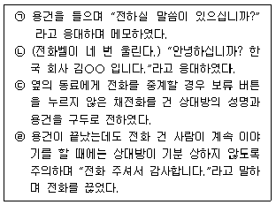
- ㉠, ㉡
- ㉡, ㉢
- ㉢, ㉣
- ㉠, ㉣
(정답률: 56%)
4. 다음은 이난숙 영업과장의 영문 명함이다. 이에 대한 설명이 바르지 않은 것은?
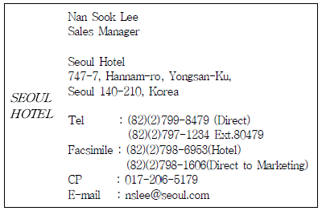
- 중국 지사에 있는 비서에게 이난숙 과장의 휴대폰 번호를 82-017-206-5179로 알려준다.
- 중국 지사에 있는 비서에게 팩스는 가능하면 마케팅 부서인 82-2-798-1606으로 보내라고 말한다.
- 사무실에 전화하여 자신과 통화를 원할 때는 82-2-797-1234로 전화하여 내선번호 80479를 누르라고 말한다.
- 중국 지사에 있는 비서에게 이난숙 과장의 휴대폰 번호를 82-17-206-5179로 알려준다.
(정답률: 40%)
5. 한고은 비서는 상사가 긴급 외부 회의에 참석해야 하는 상황이 발생하여 대리자로서 내방객 응대를 하라는 상사의 지시를 받았다. 이 때 한비서의 손님 응대로 가장 적절한 것은?
- 비서는 자신이 상사의 대리자이므로 가능한 상대방에게 도움이 될 수 있는 정보를 제공한다.
- 대리로 면담을 한 내용을 신속하고 정확하게 상사에게 보고한다.
- 손님으로부터 질문을 받았을 경우 자신이 아는 범위 내에서만 말씀드린다고 손님에게 양해를 구한다.
- 손님의 질문에 충분히 답할 수 없을 경우에는 회사 업무 담당자를 불러 설명하도록 부탁한다.
(정답률: 43%)
6. 비서의 업무 수행 자세로 적절하지 않은 것은?
- 상사에게 꾸중을 듣더라도 그 자리에서 잘잘못을 가리지 않는 것이 좋다.
- 상사의 개인적인 결점을 굳이 언급할 필요는 없다.
- 상사의 일하는 방식이 비효율적일 경우 상사에게 일에 관한 조언을 아끼지 않아야 한다.
- 상사의 업무 영역에 필요 이상으로 개입해서는 안 되며, 사전에 지시받고 합의된 업무에 한하여 융통성을 발휘하도록 한다.
(정답률: 61%)
7. 김 비서는 태국에서 오시는 치홍마이 지점장을 위해 리무진을 준비하려했으나 여의치 않아 마케팅 이사인 James Park이 자신의 차량으로 치홍마이 지점장을 공항으로 모시러 가야하는 상황이다. James Park이 운전할 경우 치홍마이 지점장의 좌석으로 옳은 것은?
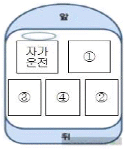
- ①
- ②
- ③
- ④
(정답률: 34%)
8. 다음은 L사의 K전무의 10월 셋째 주에 예정된 일정이다. K전무의 일정 우선순위를 중요도와 긴급도에 따라 민비서가 가장 잘 배열한 것은?
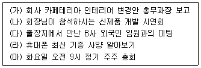
- (마) - (라) - (다) - (나) - (가)
- (마) - (다) - (나) - (라) - (가)
- (마) - (나) - (다) - (라) - (가)
- (마) - (나) - (다) - (가) - (라)
(정답률: 60%)
9. 최근에는 상사의 일정관리를 위해 비서가 다양한 전자스케쥴러를 활용하고 있다. 전자스케쥴러의 특징을 설명한 것이 아닌 것은?
- 일정의 상세 내용을 분량에 상관없이 입력하기 편리하다.
- 일정과 관련된 수정 혹은 알림 등의 각종 기능을 활용할 수 있다.
- 각종 Mobile 도구로 쉽게 연동되므로, 언제 어디서나 확인이 가능하다.
- 여러 사람이 서로 다른 PC에서 동시에 같은 일정을 수정할 경우에도 오류가 발생하지 않아 효율적이다.
(정답률: 64%)
10. 다음 중 비서가 경영진의 출장지원업무를 수행한 내용으로 가장 적절하지 않은 것은?
- 상사의 직위에 따라 이용 가능한 교통편과 좌석 등급이 다르므로 회사의 출장 경비규정을 확인하여 규정에 알맞은 교통편과 좌석 등급을 선정했다.
- 귀국 일정이 확정되지 않아 돌아오는 항공편 날짜를 지정할수 없어 일정 변경이 가능한 항공권인 1등석(first class) 항공권으로 예약을 진행했다.
- 예약하려는 항공사에 남은 좌석이 없어서 대기자 명단에 올리고, 비슷한 시간대의 다른 좌석을 확보해 두고 대기좌석이 오픈되는지 수시로 확인했다.
- 비자 발급을 위해서는 보통 여권 만료일이 6개월 이상 남아있어야 하므로 상사 여권의 만료일을 별도로 기입해 두고 만료 6개월 이내 재발급 받았다.
(정답률: 57%)
11. 다음은 홍비서가 알아본 상사의 항공일정이다. 항공일정에 따른 홍비서가 상사에게 보고하는 내용이 올바르지 않은 것은?
- “5월13일 뉴욕행은 동경 하네다 공항에서 이른 아침에 출발합니다.”
- “뉴욕 도착 일자는 현지 날짜로 5월 13일입니다.”
- “서울에 22일에 도착하시는 대로 차를 대기시켜 놓도록 하겠습니다.”
- “5월 19일 뉴욕 케네디 공항에서 출발하여 런던 도착하시면 호텔 숙박이 2박으로 예약되어 있습니다.”
(정답률: 32%)
12. 다음 중 회의록에 기재되어야하는 항목으로 가장 부적절한 것을 고르시오.
- 회의 명칭 - 심의사항
- 회의의 의제 - 발언자의 발언 내용
- 개최 일시 및 폐회 시간 - 특별 참석자
- 회의 참석자 명단 - 전 회의록 요약 내용
(정답률: 48%)
13. 다음 중 비서의 의전행사 지원업무에 대한 설명으로 가장 적절하지 않은 것은?
- 의전행사 계획 시 상사 의전 계획은 시간 단위로 작성한다.
- 행사 의전 정보로 참석자 프로필로 수집해야 될 사항은 사진, 성명, 회사명, 직위, 학력, 회사 전화번호, 생년월일,상사와의 관계, 종교, 취미 기호 등이 있다.
- 만찬 행사는 입장 및 착석 → 오프닝 퍼포먼스 및 문화 공연 → 환영사(주최 기관의 장) → 개회사(주최 기관) → 축사 및 건배 제의(주관 기관의 장) → 만찬 → 퇴장의 순서로 진행되는 것이 일반적이다.
- 행사 단상 좌석 배치는 행사에 참석한 최상위자를 중심으로 하고 최상위자가 부인을 동반하였을 때에는 단 위에서 아래를 향하여 중앙에서 우측에 최상위자를, 좌측에 부인을 각각 배치하며, 그다음 인사는 최상위자 자리를 중심으로 단 아래를 향하여 우좌의 순으로 교차 배치한다.
(정답률: 23%)
14. 다음은 주요 나라별 주의해야 할 문화적 에티켓에 대한 설명이다. 틀린 내용을 고르시오.
- 인도네시아에 체류하는 동안 라마단 기간일 경우 해가 있는 동안에는 금주, 금연, 금식, 금욕을 실시하므로 고기와 술을 찾는 행위는 삼간다.
- 일본에서는 회의 시작 시간보다 미리 방문하여 회사를 둘러 보는 것은 삼간다.
- 스코틀랜드 사람이나 아일랜드 혹은 웨일즈 사람에게 잉글리시라고 하면 불쾌하게 여기므로 주의한다.
- 독일인의 경우 초면에 이름을 호명함으로써 친근함을 표현하는 것이 좋다.
(정답률: 72%)
15. 다음은 직급이 다른 두 임원의 전화연결 대화이다. 비서의 전화응대 화법으로 가장 적절하지 않은 것은?
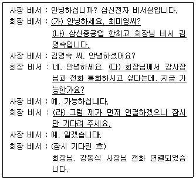
- (가)
- (나)
- (다)
- (라)
(정답률: 45%)
16. 강비서는 한국상사(주)의 한전무의 비서이다. 강비서는 한전무의 지시를 받고 다음과 같이 확인하였다. 강비서가 업무지시를 받은 후 꼭 확인하지 않아도 되는 내용은 무엇인가?
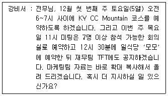
- KY 컨트리클럽(Country Club) 코스 확인
- 식당 룸(room) 예약 여부 확인
- 회의장소 및 오찬 여부 확인
- 컬러 혹은 흑백 복사 확인
(정답률: 27%)
17. 다음 중 비서가 상사의 보고 및 지시 업무 수행 시 지켜야 할 집무실 출입 예절에 관한 설명으로 옳은 것은?
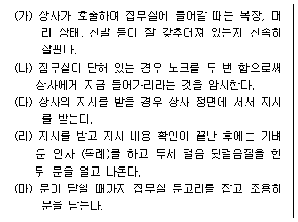
- (가), (나), (다), (라), (마)
- (가), (나), (라), (마)
- (가), (나), (다), (마)
- (가), (나), (다), (라)
(정답률: 50%)
18. 비서의 화법으로 가장 적절한 것은?
- “사장님, 예정보다 회의가 많이 길어졌습니다. 수고 많으셨습니다.”
- “사장님, 오늘 교통체증이 심해 늦었습니다. 죄송합니다.”
- “사장님의 말씀이 있으시겠습니다.”
- “사장님, 영업부 김상경 부장님은 현재 외근중이십니다.”
(정답률: 26%)
19. 상사가 업무를 효율적으로 수행할 수 있게 하기 위해서 비서는 상사의 다양한 정보를 관리하게 된다. 다음 중, 비서가 할 수 있는 상사의 다양한 정보관리와 가장 관련이 없는 것은 어느 것인가?
- 상사의 신상 카드를 작성한다.
- 상사의 사번, 신용 카드 번호와 각각의 만기일을 체크한다.
- 상사의 여권번호, 만기일, 항공사 및 각종 마일리지 번호와 적립 상황을 최신의 정보로 유지하도록 한다.
- 상사의 인사 기록 카드 관리를 담당한다.
(정답률: 34%)
20. 최비서는 상사를 대신하여 경조사업무를 수행하는 일이 빈번하다. 이때 최비서가 지켜야할 조문 예절 중 가장 바람직하지 않은 것은?
- 헌화시에는 꽃은 오른손으로 받아 왼손을 위에 살짝 얹고 꽃이 오른쪽으로 오도록 받은 후, 헌화대 앞에서 묵례하고 시계 방향으로 돌려 줄기를 영정 앞쪽으로 향하게 한다.
- 상제에게 자신이 상사를 대신하여 왔음을 밝힌다.
- 조문 복장을 하지 못할 상황이면 차분한 느낌의 평상복을 입는다.
- 조객록에 자신의 이름을 적은 후 조문을 한다.
(정답률: 60%)
2과목: 경영일반
21. 다음 중 인공지능, 사물인터넷, 빅데이타 등과 가장 연관성이 높은 경영환경요소는 무엇인가?
- 기술적환경
- 사회적환경
- 경제적·법적환경
- 경쟁적환경
(정답률: 72%)
22. 다음의 내용은 무엇을 설명하는 것인지 다음 보기 중 가장 적합한 것은?
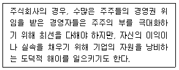
- 고위험투자 문제
- 대리인 문제
- 주주 문제
- 특혜 문제
(정답률: 31%)
23. 글로벌 경영에 대한 설명으로 가장 적절하지 않은 것은?
- 글로벌 경영이란 다른 나라와 관계를 갖는 모든 기업경영 활동을 뜻한다.
- 글로벌 경영은 지구를 하나의 활동무대로 생각하여 전략, 생산, 마케팅, 인력, 재무 등의 기능들을 전 세계에 걸쳐 수행하는 경영방식을 말한다.
- 글로벌 환경에서 적절한 리더십은 현지법인이 위치하고 있는 국가의 가치관 및 태도에 대해 이해하는 것이다.
- 전 세계적으로 자유화와 개방화의 물결이 일어나면서 무역장벽이 높아지고 있으며, 경영의 글로벌화가 신속하게 진행되고 있다.
(정답률: 61%)
24. 다음은 경영환경에 대한 설명이다. 이 중 가장 적절하지 않은 것은?
- 기업은 자신이 속한 환경과는 분리해서 존재할 수 없기에 단독으로 활동할 수 없다.
- 국가는 기업이 경영활동을 하게 해주거나, 감시하는 기업의 환경요인이다.
- 기업은 외부환경과 상호작용을 할 필요 없는 폐쇄 시스템이다.
- 기업은 환경변화에 끊임없이 대응해야한다.
(정답률: 68%)
25. 기업 인수합병에 관한 다음 설명 중 가장 적절하지 않은 것은?
- 인수는 한 기업이 다른 기업의 경영권을 매입하는 것을 의미하고, 합병은 두 개 이상의 기업이 합쳐 하나의 기업이 되는 것을 말한다.
- 동종업계에서 원료공급업체나 유통판매회사와 합하여 공급 사슬로 엮어 놓으면 수평합병이다.
- 기업인수는 기존 기업이 보유한 유리한 조건을 그대로 향유 할 수 있다는 이점이 있다.
- 우리사주조합의 지분율을 높여 좀 더 많은 의사결정권을 확보하는 경우, 인수합병을 방어하기 위한 수단이 된다.
(정답률: 27%)
26. 다음 중 주식회사의 특징에 대한 설명으로 가장 적절하지 않은 것은?
- 주식회사는 소수의 출자자로부터 자본을 모으는 것이 아니라 널리 일반 대중에 산재하는 자본으로 대규모의 자본을 조달하는 기업형태이다.
- 주식회사는 회사의 지분 또는 주식 모두가 개인 일인 독점소유에 속한다.
- 주식회사의 주주는 주주총회에 참석하여 의결권을 행사할 수 있으며, 이익배당을 청구할 수 있다.
- 주식회사는 주식의 발행으로 설립된 회사이다.
(정답률: 46%)
27. 중소기업의 특징에 대한 설명으로 가장 적절한 것은?
- 우수한 인력과 자금의 확보가 용이하다.
- 넓은 시장을 대상으로 전국적인 인지도를 얻기가 쉽다.
- 대량 생산을 통해 규모의 경제를 얻는다.
- 고용에서 차지하는 비중이 높아 고용증대에 효과가 크다.
(정답률: 54%)
28. 다음 중 지식경영에 대한 설명으로 가장 적절하지 않은 것은?
- 지식경영은 조직 구성원 개개인의 지식이나 노하우를 활용하는 경영기법이다.
- 암묵지는 문서나 매뉴얼처럼 여러 사람이 공유할 수 있는 지식이다.
- 형식지와 암묵지는 상호작용을 하면서 지식이 확장, 공유된다.
- 지식은 형식지와 암묵지로 구분된다.
(정답률: 60%)
29. 다음 중 경영통제의 유형에 관한 설명으로 가장 적절하지 않은 것은?
- 종업원을 생산활동에 투입하기 전에 교육이나 훈련하는 것은 사전통제에 해당한다.
- 일선 감독자들이 작업진행상황을 직접 측정하고 수정하는 것은 동시통제에 해당한다.
- 사후통제는 작업종료 후 이루어지는 통제활동으로 결과변경이 불가능하며 피드백만 가능하다.
- 미래 예측이 어려운 시장에서는 사후통제보다 사전통제를 충분히 함으로써 통제의 효과를 높이고 비용을 줄일 수 있다.
(정답률: 30%)
30. 조직의 구성원들이 공유하고 있는 가치관, 신념, 이념, 관습 등을 총칭하는 것으로 조직과 구성원의 행동에 영향을 주는 기본적인 요인을 무엇이라 하는가?
- 조직 구조
- 제도
- 비전
- 조직문화
(정답률: 56%)
31. 다음 중 리더십에 대한 설명으로 가장 옳지 않은 것은?
- 리더십은 비전이나 목표를 달성하도록 집단에게 영향력을 발휘할 수 있는 능력으로 정의한다.
- 리더십 이론은 특성이론, 행동이론, 상황이론으로 발전하였다.
- 상황이론은 유일한 이상적인 리더의 형태가 있다고 보고 이상적 리더십 유형을 규명하려고 한다.
- 혁신적 리더십은 부하들로 하여금 스스로의 관심사를 조직발전 속에서 찾도록 영감을 불러 일으켜주며 새로운 창조와 혁신을 할 수 있도록 비전을 제시하는 리더십이다.
(정답률: 59%)
32. 다음 동기부여의 내용이론과 관련된 설명으로 가장 적절한 것은?
- 매슬로우이론에 의하면 인간의 욕구는 생리적 - 안전 - 애정 - 존경 - 자아실현 등 5가지단계로 계층화되어있다.
- 맥클리랜드는 인간의 욕구 중 성취욕구, 권력욕구, 친교욕구를 주로 연구하였고 그 중 친교욕구가 가장 중요하다고 주장하였다.
- 앨더퍼는 인간은 동기요인과 위생요인 2가지의 욕구를 가지고 있다고 주장하였다.
- 허쯔버그는 ERG이론에서 욕구가 충족되면 상위욕구에 대한 욕망이 커지지만 목표가 좌절되면 하위욕구에 대한 욕망이 증가한다고 주장하였다.
(정답률: 44%)
33. 다음의 마케팅 기법의 설명 중, 가장 적절하지 않은 것은?
- 다이렉트마케팅-때와 장소를 가리지 않고 잠재적인 고객 또는 기존고객 정보를 확보하여 고객과 직접 1:1로 상대하여 거래를 유도하는 것을 목적으로 하는 기법
- 데이터베이스마케팅 - 기업이 고객정보를 수집하여 컴퓨터에 입력하여 데이터베이스를 만든 다음 이 자료를 이용하여 마케팅활동을 하는 기법
- 텔레마케팅 - 원거리에 있는 잠재구매자에게 직접 방문하여상품정보를 제공하고 구매를 유도하는 마케팅 기법
- 텔레비전 홈쇼핑 - 케이블 TV 홈쇼핑채널에서 방송한 상품 정보를 보고 구매자가 전화를 걸어 상품을 주문하도록 유도하는 판매방법
(정답률: 69%)
34. 다음을 설명하는 가장 적절한 용어는 무엇인가?
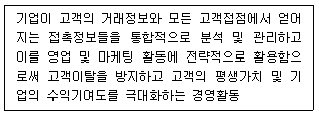
- 고객만족관리(CSM-Customer Satisfaction Management)
- 고객관계관리(CRM-Customer Relationship Management)
- 컴퓨터통합생산(CIM-Computer Integrated Manufacturing)
- 공급사슬관리(SCM-Supply Chain Management)
(정답률: 51%)
35. 다음의 공식조직과 비공식조직에 대한 설명으로 가장 적절하지 않은 것은?
- 공식조직은 어떤 목적을 위한 인위적 조직이다.
- 공식조직과 비공식조직은 서로 보완적·촉진적인 상호작용을 함과 동시에 대립적으로도 작용한다.
- 비공식 조직은 개인들의 학연, 지연, 기호 등에 의한 자연 발생적 조직이다.
- 비공식 조직은 종업원들에게 만족감을 낮추며 기업성과와는 전혀 상관없다.
(정답률: 73%)
36. 기업의 수익성을 나타내는 지표 중 하나인 자기자본이익률(ROE)을 계산하는 산식으로 가장 옳은 것은?
- 당기순이익/자기자본×100
- 매출액/자기자본×100
- 주당배당액/자기자본×100
- 매출액/총자산×100
(정답률: 37%)
37. 주택을 담보로 하여 금융기관으로부터 일정기간 일정금액을 연금식으로 지급받는 장기주택저당대출제도는 다음 중 무엇인가?
- 역모기지론(reverse mortgage loan)
- 모기지론(mortgage loan)
- 머니마켓펀드(MMF)
- 하드론(hard loan)
(정답률: 32%)
38. 다음의 수요를 결정하는 요인에 대한 설명 중, 보완재에 대한 설명으로 가장 적합한 것은?
- 커피가격이 상승하면 상대적으로 저렴해진 녹차에 대한 수요가 증가한다.
- 쌀에 대한 수요는 설탕 값이 상승하더라도 거의 변화하지 않는다.
- 조각케이크에 대한 수요는 커피 값이 상승하면 감소한다.
- 수박가격이 상승하면 참외에 대한 수요가 증가한다.
(정답률: 25%)
39. “첨단 디지털기기에 익숙한 나머지 뇌가 현실에 무감각 또는 무기력해지는 현상”을 다음 중 무엇이라고 하는가?
- 스낵브레인
- 팝콘브레인
- 챗봇브레인
- 프레브레인
(정답률: 50%)
40. 다음 중 인사관리와 관련된 활동에 대한 설명으로 가장 적절하지 않은 것은?
- 인사관리란 조직에서 인적자원을 관리하는데 관련된 모든 기능과 활동을 의미하는 경영활동의 한 과정을 의미한다.
- 인력수요를 예측하기 위해서는 직무분석 기법을 활용하는데, 직무분석을 위해서는 직무기술서와 직무명세서를 활용할 수 있다.
- 직무조사표에 의해 관련 직무에 관한 제 항목을 상세하게 기술하여, 직무분석내용을 정리한 후 그 요점을 기술한 문서가 직무기술서이다.
- 직무기술서는 직무 및 그 직무에 필요한 항목 및 요건만을 개인적 자격에 중점을 두어 작성한 양식을 의미한다.
(정답률: 64%)
3과목: 사무영어
41. Choose the one which does not correctly explain the abbreviations.
- ATM : Automated Teller Machine
- CPA : Certified Processing Accountant
- CV : Curriculum Vitae
- MOU : Memorandum of understanding
(정답률: 22%)
42. 다음은 네 명이 각각 자신의 직업을 묘사하는 인터뷰 내용이다. 보기 중 가장 잘못 연결된 것을 고르시오.
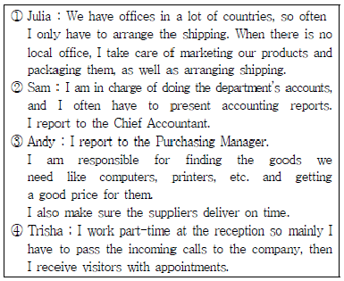
- Julia - Export Officer Manager
- Sam - Accountant
- Andy - Director of Human Resources
- Trisha –Receptionist
(정답률: 63%)
43. 다음 빈칸에 들어갈 단어들끼리 바르게 연결된 것은?
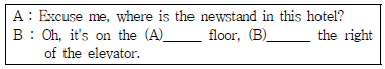
- (A) 2th - (B) to
- (A) 2nd - (B) to
- (A) 2nd - (B) of
- (A) 2th - (B) of
(정답률: 59%)
44. Read the following phone conversation and choose one which is the most grammatically correct.
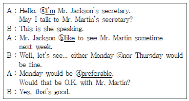
- ⓐ I’m
- ⓑ like
- ⓒ nor
- ⓓ preferable
(정답률: 40%)
45. Choose the correct inside address in a business letter.
- Mr. Robert Wilkinson
Sunshine Hotel
Reservation Manager
8 Hillside Street
Albany, NY 90221 - Dear Mr. Robert Wilkinson/Reservation Manager
Sunshine Hotel
8 Hillside Street
Albany, NY 90221 - Mr. Robert Wilkinson
8 Hillside Street
Albany, NY 90221
Sunshine Hotel
Reservation Manager - Mr. Robert Wilkinson
Reservation Manager
Sunshine Hotel
8 Hillside Street
Albany, NY 90221
(정답률: 50%)
46. 다음은 어떤 종류의 문서를 설명한 것인가?
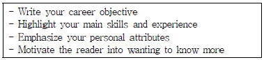
- letter of collection
- resume
- letter of complaint
- invitation
(정답률: 58%)
47. 아래 편지 봉투의 빈 칸에 들어갈 수 없는 것을 하나 고르시오.
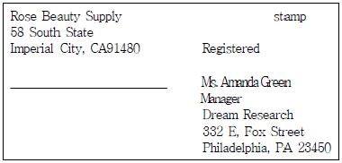
- Confidential
- Urgent
- Special Delivery
- Private
(정답률: 38%)
48. Choose the Korean expression which is not matching with the English Part.
- I need to wrap it up for today. → 오늘 일과를 시작해야겠어요.
- Refer to the quarterly report for the last year. → 작년 분기별 보고서를 참조하세요.
- Just for your information, I am forwarding this email. → 정보를 참조하시라고 이메일을 전송합니다.
- I would like to take tomorrow off. → 내일 하루 쉬고 싶은데요.
(정답률: 52%)
49. Which of the followings is the most appropriate to fill the blank ⓐ in the e-mail below?
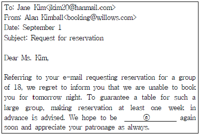
- for service
- with service
- of service
- to serve
(정답률: 33%)
50. Read the following message and choose one which is not true.
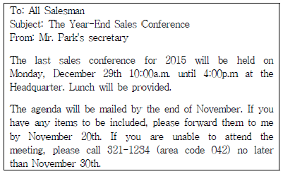
- The conference will be held at the head office for six hours.
- The organizer of the conference will serve lunch for all participants.
- The participants will receive the agenda in the middle of November.
- An absentee list will be collected no later than the end of November.
(정답률: 53%)
51. Choose one which is the most appropriate answer regarding the following conversation.
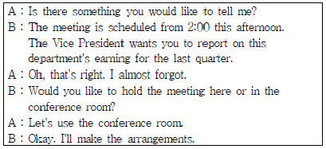
- 부사장은 회의를 2시로 바꾸기를 원한다.
- 회의는 회의실에서 열릴 것이다.
- 부사장이 지난 분기 수익에 대해 보고할 것이다.
- A는 회의실을 예약하고 회의준비를 할 것이다.
(정답률: 48%)
52. According to the following itinerary, which one is not true?
- Mr. Smith will be staying at Seoul Grand Hotel for 2 nights.
- Mr. Smith doesn't have any appointment scheduled on Tuesday morning.
- Mr. Smith will be touring the Seoul office after Management Meeting.
- Mr. Smith will be leaving Incheon Airport at 9 in the morning on June 16.
(정답률: 25%)
53. According to the conversation, which one is the most true sentence?
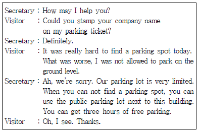
- The visitor could park on the ground level of this building for free today.
- It was difficult for the secretary to find a parking spot today.
- The visitor got a ticket for a parking violation.
- This building doesn’t provide enough parking space for all of the visitors.
(정답률: 42%)
54. Read the following conversation and choose the most appropriate set for the blank ⓐ, ⓑ and ⓒ.
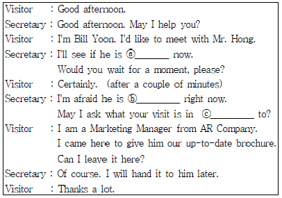
- ⓐ all right - ⓑ available- ⓒ regard
- ⓐ certain - ⓑ unoccupied - ⓒ about
- ⓐ available - ⓑ occupied - ⓒ regard
- ⓐ in stock - ⓑ free - ⓒ about
(정답률: 38%)
55. Fill in the blank Ⓐ with the most appropriate phrase.
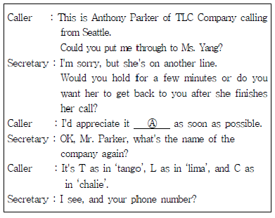
- if she rings me back
- when she calls me back
- for her to give me a call
- returning my call
(정답률: 25%)
56. Read four sets of dialogue and choose one which does not match each other.
- A : May I ask who's calling, please?
B : This is Caron Green from IBG. - A : Could I leave a message?
B : I'm sorry but I did not catch your name. - A : I'm sorry. My phone was out of order.
B : Oh, is it fixed now? - A : I'm afraid he's in a meeting at the moment.
B : What time do you expect it to be over?
(정답률: 56%)
57. According to the conversation, which of the followings is not true?
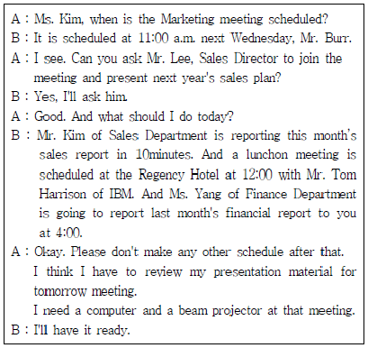
- Mr. Burr doesn't want any other schedule after Ms. Yang's report.
- Mr. Lee, Sales Director wants to join the Marketing meeting next Wednesday.
- Ms. Kim should have a computer and a beam projector ready tomorrow.
- Mr. Burr will meet Mr. Kim of Sales Department in 10 minutes.
(정답률: 35%)
58. According to the given passage, which of the followings is true?
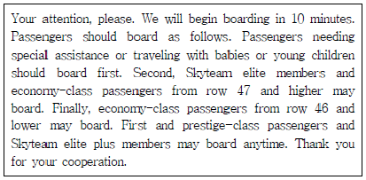
- Skyteam elite members are asked to board first.
- First-class passengers from row 47 and lower should board last.
- Passengers who accompanied by a 1 year old son can board at any time.
- Economy-class passengers from row 46 and lower should board last.
(정답률: 48%)
59. 다음 중 약어를 잘못 풀이한 것은?
- RSVP : Repondez s’il vous plait. 회신요망
- COO : Chief Organization Officer 최고운영책임자
- R&D : Research and Development 연구개발
- SME : Small and Medium-sized Enterprises 중소기업
(정답률: 51%)
60. Read the following conversation and choose the most appropriate explanation for the underlined words.
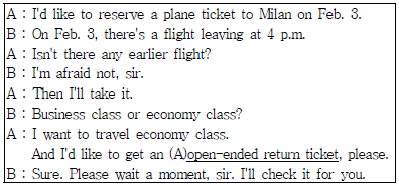
- prestige class ticket이라고도 한다.
- 돌아오는 날짜를 정하지 않은 비행기표이다.
- 편도 티켓을 말한다.
- 왕복티켓을 의미한다.
(정답률: 55%)
4과목: 사무정보관리
61. 문서 작성에서 협조에 대한 설명으로 가장 잘못된 것은?
- 기안문의 내용과 관련된 부서의 업무협조를 받아야 하는 경우 협조란을 작성한다.
- 협조는 최종결재권자의 서명을 받고 나서 협조부서의 서명을 받는다.
- 협조의 표시 방법은 협조란에 협조부서장의 직위와 성명을 쓰고 서명을 한다.
- 기안부서와 협조부서가 동일직급일 때는 교차적으로 서명을 할 수 있다.
(정답률: 50%)
62. 다음 비서의 우편관련 업무에 관한 설명 중 가장 적절하지 않은 것은?
- 여러 사람에게 발송하는 경우에는 편지 병합 기능을 이용 하여, 봉투 또는 레이블 용지에 주소를 작성하면 효율적으로 처리할 수 있다.
- 요금별납우편이란 동일인이 우편물의 종류와 우편요금 등이 동일한 우편물을 동시에 다량 발송하는 경우에 우표를 붙이지 않고 현금으로 직접 납부할 수 있는 서비스로 10통 이상 우편물에 적용된다.
- EMS는 현금 우송을 다루는 국제 등기 우편으로 통상적으로 백만원 이하의 금액으로 한정해서 우체국에서 취급한다.
- 내용증명은 우편물의 내용인 문서를 등본에 의하여 증명하는 제도이다.
(정답률: 46%)
63. 다음 중 문서의 수발신 업무 처리가 가장 적절하지 않은 비서는?
- 박비서는 수신된 편지속의 발신인 주소와 봉투의 주소가 달라서 봉투를 보관해두었다.
- 배비서는 문서 발송전에 첨부한 청구서의 이름과 수신인 이름이 동일한지 다시 확인하였다.
- 채비서는 창립기념식 초대장을 200명에게 우편으로 발송하기 위하여 편지병합 기능을 이용해서 우편 레이블을 작성 하였다.
- 윤비서는 상사가 출장 중에 온 문서를 접수 즉시 모두 스캔하여 상사의 이메일로 송부하였다.
(정답률: 63%)
64. 다음 중 문서가 효력을 발생하는 시점에 대한 설명으로 가장 옳지 않은 것은?
- 공문서는 특별한 규정이 없는 한 문서가 수신자에게 도달되었을 때 그 효력이 발생한다.
- 전자문서는 수신자가 문서를 열어 보았을 때 효력이 발생한다.
- 공고문서는 공고문서에 특별한 규정이 있는 경우를 제외하고는 공고일 이후 5일이 경과한 날부터 효력을 발생한다.
- 법규문서는 법규 공포일로부터 20일 경과 후 효력이 발생한다.
(정답률: 29%)
65. 회의 참석에 대한 감사장 작성에 관한 업무처리를 하고 있다. 다음 중 가장 적절하지 않은 것은?
- 발신인은 그 문서를 실제로 처리하는 담당자와 일치하는 것이 보통이다.
- 정중하고 예의바른 표현을 사용하여 감사의 마음이 전달되도록 작성한다.
- 김비서는 회의 참석자들에게는 회의 후 일주일 이내에 감사장을 보냈다.
- 연사를 초빙한 회의 개최 완료 후 연사에게 감사장을 보냈다.
(정답률: 46%)
66. 다음은 문서관리 중 상호 참조(Cross referencing)에 대한 설명이다. 가장 옳지 않은 것은 무엇인가?
- 한 장의 문서가 두 개 이상의 분류 항목에 해당될 때 사용한다.
- 주된 제목의 폴더에 상호 참조표를 넣어 두고, 다른 쪽 폴더에는 문서를 넣어 둔다.
- 상호 참조는 문서 검색을 용이하게 한다.
- 문서를 복사하여 관계된 모든 폴더에 보관할 수도 있다.
(정답률: 35%)
67. 다음 중 문서 관리에 대한 설명이 가장 올바르지 않은 것은?
- 문서 처리 단계에 따른 문서 분류는 하나의 문서가 처리단계에 따라서 불리는 명칭이 다른 것이다.
- 기업에서 정관은 영구보존하여야할 문서에 해당한다.
- 문서의 이첩은 보존중인 문서의 이용 빈도수가 증가하여, 원래 부서 내 문서보관함으로 옮기는 것이다.
- 선람문서는 선결문서라고도 하며, 공문이 시행되기 전에 미리결재를 얻는 문서이다.
(정답률: 50%)
68. 다음 문서 중 메일머지를 이용하여 작성하지 않아도 될 부분을 모두 고르시오.
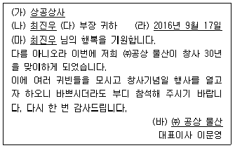
- (가), (나), (다)
- (라), (바)
- (라), (마), (바)
- (다), (라), (바)
(정답률: 53%)
69. 다음 중 문서의 종류가 다른 것은?
- 통지서
- 안내문
- 회의록
- 게시문
(정답률: 69%)
70. 다음 전자문서 관리 절차가 순서대로 나열된 것은?
- 생성 - 분류 - 등록 - 보관 - 유통 - 처분
- 등록 - 생성 - 유통 - 분류 - 보관 - 처분
- 생성 - 등록 - 분류 - 보관 - 유통 - 처분
- 작성 - 분류 - 등록 - 유통 - 보관 - 처분
(정답률: 32%)
71. 광디스크는 컴퓨터 정보의 저장매체로, 사용하는 레이저의 파장과 홈의 간격에 따라 정보의 용량이 달라진다. 홈을 촘촘히 많이 팔수록 정보를 많이 저장할 수 있는데, 홈이 작아지면 홈에 쏘아 주는 레이저의 파장이 짧아져야 한다. 이러한 광디스크의 종류가 아닌 것은?
- 블루레이 디스크
- DVD
- CD
- 플래시 메모리
(정답률: 43%)
72. 전자문서에 대한 설명으로 가장 잘못된 것은?
- 전자문서는 전자적 형태로 작성, 송신, 수신, 저장된 모든 문서를 말한다.
- 종이문서를 전자문서로 변환한 전자화문서의 경우에도 전자문서와 동일한 효력을 가진다.
- 전자문서로서 요건을 갖추더라도 전자화 이전의 문서가 가졌던 동일한 법적 효력을 가지지 않는다.
- 전자문서라도 표준에 따라 작성하여 진본성, 무결성, 신뢰성, 이용가능성을 보장할 수 있다.
(정답률: 50%)
73. 다음의 설명이 의미하는 것은?
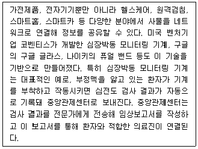
- IoT(Internet of things)
- 유비쿼터스(Ubiquitous)
- AR(Augmented reality)
- 클라우드 컴퓨팅(Cloud computing)
(정답률: 51%)
74. 자신의 데이터베이스를 가지고 있지 않고 다른 검색엔진을 이용하여 정보를 찾는 검색엔진은?
- 메타 검색엔진
- 주제별 검색엔진
- 하이브리드 검색엔진
- 인덱스 검색엔진
(정답률: 46%)
75. 상공건설에 근무하고 있는 김비서는 상사의 명함을 관리하기 위한 데이터베이스를 작성하려고 MS-Access를 사용하고 있다. 이 데이터를 이용하여, 다른 SW를 별도로 이용하지 않고 레이블 용지에 연하장 발송을 위한 주소를 출력하려고 한다. 이 때 사용할 수 있는 것으로 가장 적절한 것은?
- 쿼리
- 폼
- 매크로
- 보고서
(정답률: 12%)
76. 상공전자에 근무하는 최비서는 증권시장 동향에 대해 간단히 보고를 하라는 지시에 따라 오후 3시에 다음과 같은 자료를 확인 후 보고에 들어갔다. 최비서의 보고 중 가장 올바르지 않은 내용은?
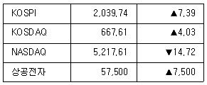
- 종합주가지수는 7.39포인트 상승하였습니다.
- 어제 미국의 나스닥 지수는 하락하였습니다.
- 우리회사 주식은 상한가까지 상승하였습니다.
- 코스닥은 전일 대비 4.03포인트 상승했습니다.
(정답률: 44%)
77. 다음 중 신문스크랩에 대한 설명으로 가장 옳지 않은 것은?
- 스크랩은 주제 구분 없이 날짜별로 다양한 내용을 정리한다.
- 기사를 스크랩한 경우 반드시 출처와 날짜 정보를 기입한다.
- 큰 제목을 중심으로 훑어본 후 필요한 기사를 찾아 스크랩 한다.
- 기사 중 중요 내용에는 밑줄을 그어 둔다.
(정답률: 58%)
78. 비서들이 그래프를 작성하고 있다. 다음 중 원하는 목적에 맞추어서 가장 적절하게 표현할 수 있는 그래프를 작성했다고 보기 어려운 것은?
- 최비서는 2016년 12월말일자로 주요생산품별 매출액을 비교하기 위하여 가로막대그래프를 이용하였다.
- 한비서는 전국과 서울 인구의 종교 분포 비율을 비교하기 위하여 원그래프를 사용하였다.
- 이비서는 2010년부터 2016년까지 직원 수의 변화를 보여주기 위하여 꺾은선 그래프를 사용하였다.
- 양비서는 휴대폰 기기의 시장 점유율을 보여주기 위해서 도넛형 그래프를 이용하였다.
(정답률: 33%)
79. 아래의 컴퓨터 바이러스 진단 및 방지를 위한 조치 중 가장 적절하지 않은 것은?
- 김비서는 여러 종류의 백신을 동시에 설치하여 검사하였다.
- 문비서는 USB드라이브의 자동실행기능을 해제하였다.
- 안비서는 웹브라우저를 최신버전으로 업데이트 하였다.
- 오비서는 비밀번호를 웹사이트마다 다르게 하고, 복잡하게 설정하였다.
(정답률: 33%)
80. 다음은 비서들이 업무상 자주 사용하게 되는 스마트폰 어플리케이션이다. 이 중 성격이 다른 한 가지는?
- 어썸노트
- 드롭박스
- 아웃룩
- 구글캘린더
(정답률: 54%)